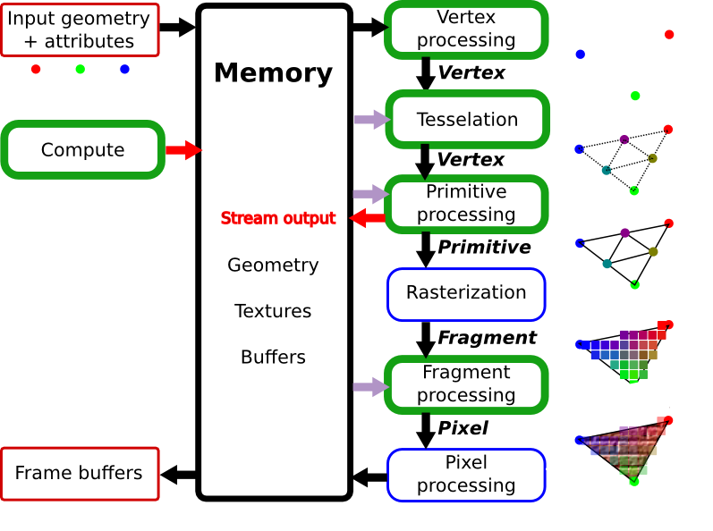
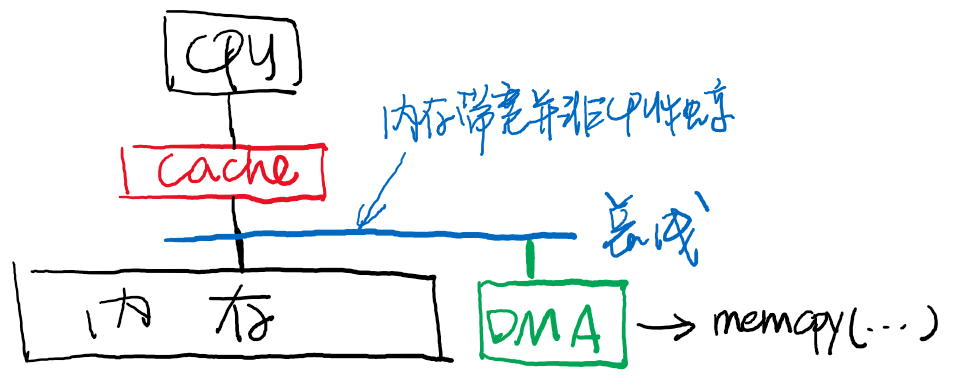

I/O 设备与驱动
本讲阅读材料
1. I/O 设备
处理器的指令能够访问 I/O 设备，主要是通过两种方式实现的：
- 端口 I/O (Port IO, PIO)，相当于是为 I/O 设备提供了一个单独的地址空间，通过读/写端口的方式实现设备控制。通常，一个 I/O 设备的寄存器分为三类：状态寄存器、控制寄存器、数据寄存器。顾名思义，我们可以通过控制寄存器实现设备控制(例如设置设备的模式等)，从数据寄存器读写数据，并且读取状态寄存器来查看设备执行命令的状态。
- 内存映射 I/O (Memory-Mapped I/O, MMIO)。给特定的内存地址赋予特殊的含义，从而读/写内存地址就能实现设备的访问。在《计算机系统》的课程作业中，显存就是通过这种方式实现的。一方面，内存映射 I/O 完全可以用来实现状态/控制/数据寄存器，另一方面，在设备从外部看来是一段连续数据时 (例如显存)，MMIO 能减少不必要的内存搬运。
从道理上来说，I/O 设备无非就是一组接口，能够读取/写入数据，I/O 设备会根据自己的协议解读这些数据，并且反映到物理世界中去。我们每个人使用计算机，使用的都是它的 I/O 设备，因此对 “计算机” 的第一印象其实都来自这些设备——我们可以通过按键、移动鼠标，来改变屏幕上的内容。这一切都是用计算实现的——处理器读取二进制的数据、进行计算，再以二进制的形式输出。
因此，一个 I/O 设备可以看做是若干可以读写的 “寄存器”——我们只需能和设备交换状态、命令、数据，就能完成各类设备的访问。
1.1. 键盘控制器
键盘控制器内部有一个缓冲区，在按键之后会将键盘的扫描码保存到缓冲区内——这就是为什么老式的计算机如果没能进入操作系统，反复按键会导致报警——缓冲区满后，键盘的按键将丢失，键盘用报警的方式提醒用户。CPU 可以通过 I/O 指令 (根据系统实现，端口 I/O 或内存映射 I/O)读取键盘控制的信息：
int status = inb(0x64);
if ((status & 0x1) == 0) {
// no input
} else {
if (status & 0x20) { // mouse
} else {
int code = inb(0x60) & 0xff;
// 按键的“扫描码”
}
}
鼠标和键盘是非常类似的，鼠标向控制器发送的是按键的信息，以及鼠标距离上一个时刻发生的位移 $(x, y)$ 坐标。
1.2. 磁盘控制器
磁盘控制器与键盘控制器相似，通过状态、控制、数据访问。因为磁盘相对于 CPU 是很慢的设备 (磁盘在三维空间中存储信息——盘片、通过读写头定位的柱面、旋转的扇区，其中有机械装置，通常需要 ms 级别的时间才能完成操作)，因此让 CPU 不断轮询 status 寄存器会浪费很多 CPU 资源。因此，磁盘驱动器可以配置成中断模式，在磁盘准备完毕后发送中断。
与磁盘交互的代码请参考 xv6 (x86) 的 ide.c。
1.3. 显卡
显卡是大家最感兴趣的设备——没有它，就没有那么多好玩的游戏了。不过当我们介绍显卡 (GPU) 的时候，并没有通过 “图形显示” 这个功能来介绍它。显卡其实是系统里的另一个 “多处理器计算机”，它拥有自己的内存系统和计算系统，但接受 CPU 的控制。以下是一段为GPU编写的程序：
__global__ void add(int *a, int *b, int *c) {
int tid = blockIdx.x; // handle the data at this index if (tid < N)
if (tid < N) {
c[tid] = a[tid] + b[tid];
}
}
可以看到，GPU上程序最重要的特性就是并行。一个 GPU 上有数以千计的核心，并且可以被配置成三维 “立方体” 的形态，编写一份程序可以在立方体的节点上同时运行 (这个例子只用到了一个维度)——虽然每个 GPU (例如 CUDA) 核心的运算速度不必乱序多发射的 CPU 更快，但在运算量极大的场景上，多核心的优势就体现出来了。
CPU 与 GPU 工作的模式大致如下：
- CPU 把需要的数据传送给 GPU。对于上一个例子，GPU 需要的数据是两个数组；对于游戏或图形显示的例子，GPU 需要顶点信息、材质、贴图、映射等信息；
- 通知 GPU 开始运算并等待运算结束；
- 从 GPU 处取回运算结果。当然，如果运算的结果最终的目的是显示在屏幕上 (例如算出 1920x1080 个像素点的颜色)，GPU 可以帮助我们把显存中的一部分同步到物理接口 (例如 HDMI) 上，这样 CPU 就完全不必过问图形的显示了。
因此，刚才的 add 程序还需要我们的 CPU 在 GPU 上放置合适的数据并 “启动”。为了在 GPU 上运行 add()，我们可以使用如下的 main 函数。这段 main 函数运行在CPU上：
int main( void ) {
int a[N], b[N], c[N];
int *dev_a, *dev_b, *dev_c;
// allocate the memory on the GPU
HANDLE_ERROR(cudaMalloc((void**)&dev_a, N * sizeof(int)));
HANDLE_ERROR(cudaMalloc((void**)&dev_b, N * sizeof(int)));
HANDLE_ERROR(cudaMalloc((void**)&dev_c, N * sizeof(int)));
// fill the arrays 'a' and 'b' on the CPU
for (int i=0; i<N; i++) {
a[i] = -i;
b[i] = i * i;
}
// copy the arrays 'a' and 'b' to the GPU
HANDLE_ERROR(cudaMemcpy(dev_a, a, N * sizeof(int), cudaMemcpyHostToDevice));
HANDLE_ERROR(cudaMemcpy(dev_b, b, N * sizeof(int), cudaMemcpyHostToDevice));
add<<<N,1>>>( dev_a, dev_b, dev_c );
// copy the array 'c' back from the GPU to the CPU
HANDLE_ERROR(cudaMemcpy(c, dev_c, N * sizeof(int), cudaMemcpyDeviceToHost));
// display the results
for (int i=0; i<N; i++) {
printf( "%d + %d = %d\n", a[i], b[i], c[i] );
}
// free the memory allocated on the GPU
cudaFree(dev_a);
cudaFree(dev_b);
cudaFree(dev_c);
return 0;
}
上面的代码会被 “显卡编程” 的工具链 (例如 nvcc) 编译。运行在 GPU 上的程序 (__global__ 标记的函数) 将会编译成 GPU 支持的指令集，甚至有两种方式：
- 直接生成 GPU 指令 .cubin 文件，相当于生成汇编代码到机器代码。
- 生成中间代码 .ptx 文件 (可以想象成是 NEMU 中的 RTL)，然后再由显卡驱动进行 just-in-time 编译，最终到 GPU 上运行。这相当于生成一种 “中间代码” (字节码)。
而其他的部分则会被编译成普通的 ELF 二进制文件，给GPU发送正确的指令，执行程序并等待执行完成。
为了显示图形，流程和上述代码是十分类似的，但GPU毕竟从它诞生的那一刻起的根本使命就是显示图像，因此有专门的核心、指令等用于图像显示，刚才用于通用计算的程序就是脱胎于其中的 “着色器” (shader)。这些知识已经超过操作系统课程的范畴——操作系统把 GPU 看成是总线上的一个设备，剩下的工作就都交给设备驱动程序了。

1.4. DMA
最后一类设备十分特殊：它并不负责与计算机系统外的 I/O，它的出现主要是为了解决设备访问速度慢的一个缺点：试想我们希望从磁盘中读出海量的数据。在磁盘准备好后，我们就可以使用一个循环进行读取：
for (int i = 0; i < nbytes / sizeof(uint32_t); i++) {
data[i] = inl(DISK_PORT); // or
data[i] = mmio_readl(DISK_MMIO_ADDR);
}
再比如刚才我们的 cudaMemcpy，如果要传送很大的数据 (例如在游戏开始时向显卡传送的高清贴图)，就非常耗时了。为了把 CPU 从这些繁重的工作中解脱出来，就有了 DMA 这个设备。

DMA 设备可以看成是一个只能执行 memcpy 操作的处理器——没错！你当然可以在系统中增加一个 CPU 核心，它专门负责设备和内存之间的 memcpy。不过你不觉得这样使用一个通用处理器太浪费了吗？没错——你可以把它做得小一些，只要能执行 memcpy 就行：
// 设备寄存器；可以通过I/O进行设置
uint8_t *src, *dst;
size_t length, incr_src, incr_dst;
void do_dma() {
// 收到DMA开始指令后开始执行
for (size_t i = 0; i < length; i++) {
*src = *dst; // 可以是PIO/MMIO; 可以在设备-内存；内存-内存之间传递数据
src += incr_src;
dst += incr_dst;
}
send_interrupt(); // 完成后向处理器发送中断
}
有了这样的一个特殊的设备，CPU就不再需要花费时间在传送大量I/O设备数据上，而是只需要传送少量控制数据(例如，给DMA设置src, dst等数值)。
2. 设备驱动程序
I/O 设备五花八门。因此操作系统需要对设备进行额外的抽象，使得更上层的部分 (通常是文件系统，大家之前已经看到 “everything is a file”，每个设备在文件系统中都有一个与之对应的文件，并且可以执行文件操作) 能够以统一的接口访问这些设备。
I/O 设备的几种常见类型：
- 按照字节流访问的设备。键盘、鼠标、终端、显卡等都是此类设备。
- 按照“数据块”为单位访问的设备。存储设备 (磁盘、SSD) 是典型的块设备。
- 发送网络报文的设备。
根据设备类型不同，我们给每一类设备以统一的接口访问，实现这些接口的就是设备驱动程序。例如在 Lab2 中，我们有非常简易的设备驱动层，每个设备都有 init, read, write 三种操作 (假设设备在计算机启动的整个过程中均可用)：
typedef struct devops {
int (*init)(device_t *dev);
ssize_t (*read)(device_t *dev, off_t offset, void *buf, size_t count);
ssize_t (*write)(device_t *dev, off_t offset, const void *buf, size_t count);
} devops_t;
在实际的系统中，设备实现的操作要更多一些 (例如 Linux 系统设备实现完整的 struct file_operations)，这样上层的应用就可以用统一的接口来访问设备了。
设备驱动程序会将对这些接口的调用翻译成设备的指令发送给设备，并等设备完成，因此，磁盘的read操作可能是这样实现的：
ssize_t disk_read(deivce_t *dev, off_t offset, void *buf, size_t count) {
// assume everything is valid
P(disk_ready);
set_disk_read(buf, offset, count);
P(disk_ready);
return count;
}
void on_disk_irq() { // 中断时调用
if (did_becomes_ready()) {
V(disk_ready);
}
}
设备驱动层帮助我们屏蔽了底层设备的具体实现细节(例如寄存器的含义)。同理，如果我们想创建“虚拟”设备，也是非常容易的，只需要为它编写一个驱动程序即可。例如我们希望实现随机数生成器设备，就只需要实现设备的读接口，不需要有实际的设备：
ssize_t random_read(deivce_t *dev, off_t offset, void *buf, size_t count) {
for (int i = 0; i < count; i++) {
((uint8_t *)buf)[i] = random_byte();
}
return count;
}
Linux系统中就有一些虚拟的设备：/dev/random, /dev/null 是大家熟知且经常使用的，它们被实现为了 “字符设备”，我们甚至可以在 ls 中看到这个设备文件的属性：
$ ls -l /dev/null
crw-rw-rw- 1 root root 1, 3 May 28 13:24 /dev/null
你能知道 ls 使用了哪个系统调用获得了这个信息吗？